前面的例子中，都是在授权服务配置类中配置了一个很简单的jwt转换器，如下：
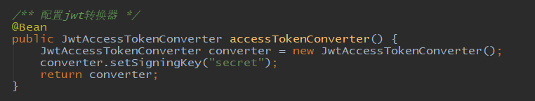
可以看到我们只用setSigningKey方法配置了一个秘钥，这里使用的是简单的对称加密的方式来加密jwt内容，同时资源服务器中使用的也是同样的秘钥配置jwt转换器：
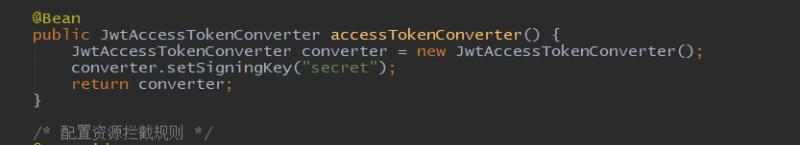
除了对称加密的方式，生产环境使用非常多的是更加安全的非对称加密的方式来加密jwt。
公私钥对可以使用jdk的命令 keytool 来生成，首先来看一下这个命令下有哪些参数：
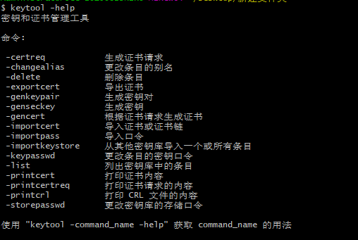
中文的参数说明很清晰，我们需要使用 -genkeypair 参数生成秘钥对。再来看一下 keytool -genkeypair 之下还有哪些参数：
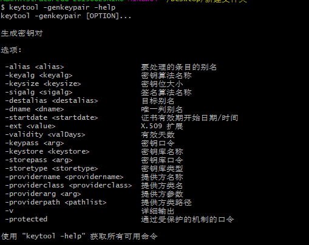
这些都是设置密钥对的属性参数。下面我们来使用keytool命令生成JKS（Java KeyStore）文件，命令如下：
从参数说明可以看出，别名为 oauth2，秘钥算法为 RSA，秘钥口令为 oauth2，秘钥库（文件）名称为 oauth2.jks，秘钥库口令为oauth2。输入命令回车后，后面还有七个问题需要回答，分别是（问题后面括号内的内容是我的回答）：
您的名字与姓氏是什么?（oauth2）
您的组织单位名称是什么?（oauth2）
您的组织名称是什么?（oauth2）
您所在的城市或区域名称是什么?（bj）
您所在的省/市/自治区名称是什么?（bj）
该单位的双字母国家/地区代码是什么?（cn）
CN=oauth2, OU=oauth2, O=oauth2, L=bj, ST=bj, C=cn是否正确?（是）
最后一个回答 是 输入完回车后，jks文件就生成了，具体过程如下：
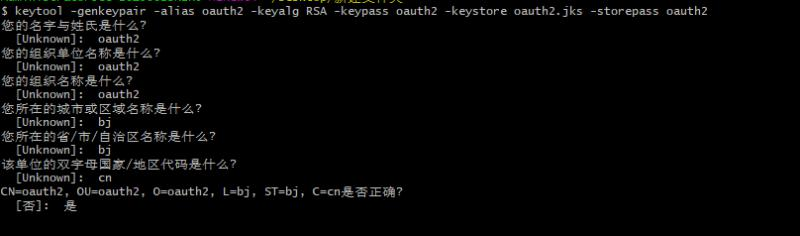
生成的秘钥库文件如下：
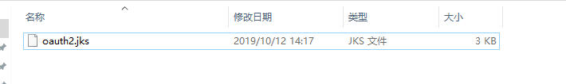
生成完成后，将jks文件拷贝到resources文件夹下即可。
这里只需要修改jwt转换器即可：
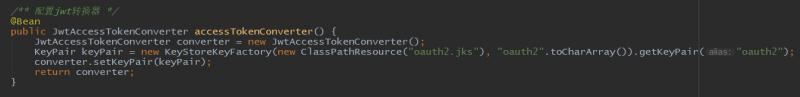
其中，"oauth2".toCharArray() 这里配置的是口令，getKeyPair("oauth2") 这里配置的是别名。
输入命令：
会打印出公钥：
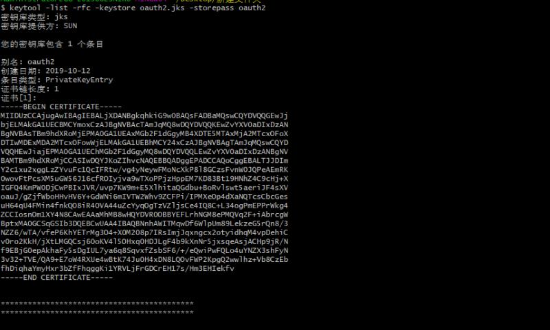
在资源服务的resources文件夹下面，新建一个pub.txt文件，将公钥复制进去：
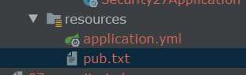
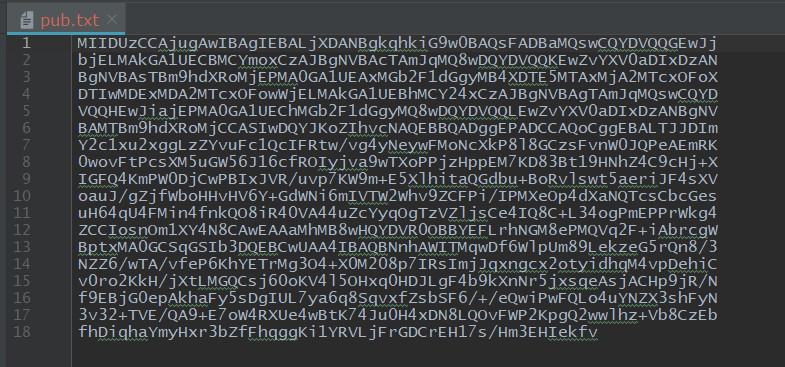
这里复制的内容就是两行等号之间的内容。
资源服务配置类也只需要修改jwt转换器配置：
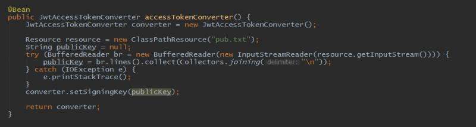
setSigningKey方法支持对称和非对称加密，它会对秘钥进行判断，来看一下源码：
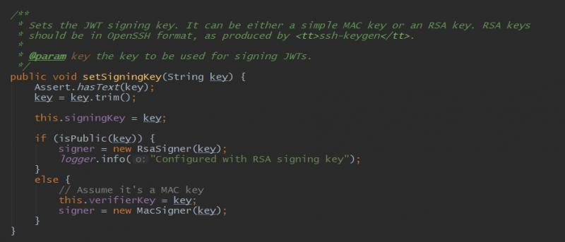
jwt转换器加密方式修改完成了，测试流程按照以前的方式获取令牌，访问受保护资源即可：
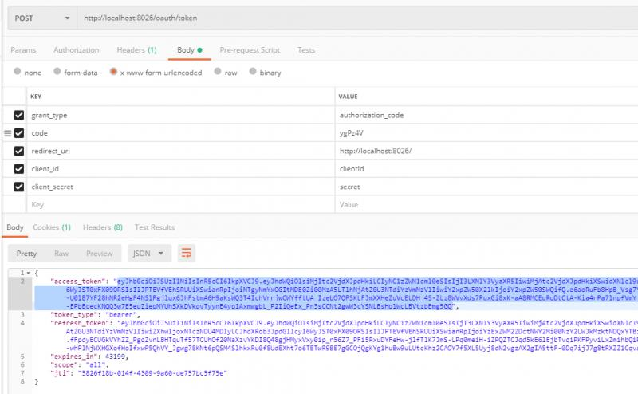
访问接口：
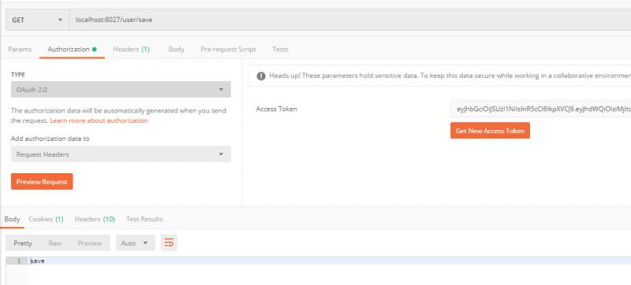
代码地址：https://gitee.com/blueses/spring-boot-security 26 27
本文由博客一文多发平台 OpenWrite 发布！